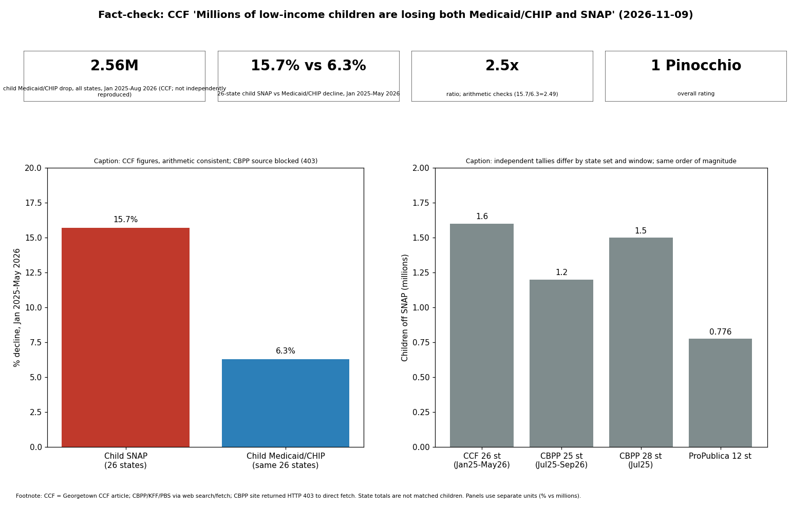

The core numbers are internally consistent and directionally corroborated. CCF reports child SNAP down 15.7% (about 1.6 million) and child Medicaid/CHIP down 6.3% (about 1.5 million) in 26 states, Jan 2025 to May 2026, a ratio of 2.49, matching "about 2.5 times". Implied bases (about 10.2M SNAP children, 23.8M Medicaid/CHIP children) are plausible. Independent tallies agree on the direction and order of magnitude: CBPP via PBS, 25 states, about 1.2M fewer children since July 2025, children 43% of the decline; KFF, child Medicaid/CHIP enrollment down in 49 states and DC, July 2025 to July 2026.
| Claim | Verdict | Source |
|---|---|---|
| 2.56M fewer child Medicaid/CHIP, all states, since Jan 2025 | Not checkable here (tracker interactive); KFF direction corroborated | CCF tracker; KFF |
| 26 states: 1.6M (15.7%) child SNAP; 1.5M (6.3%) Medicaid | Arithmetic consistent; source blocked; CBPP 1.2-1.5M in 25-28 states corroborates scale | CBPP, PBS |
| 2.5x faster | True arithmetic (2.49) | derived |
| Children about 42% of SNAP losses | Roughly supported (43% per PBS/CBPP) | PBS |
| Arizona lost half of SNAP children | Supported (49%) | CBPP via Newsweek |
| H.R.1: SNAP admin share 75% from Oct 2026; benefit cost share 5-15% from Oct 2027; Medicaid work reporting Jan 1 2027; immigrant limits Oct 1 2026; 12-month continuous eligibility for children since Jan 1 2024 | Consistent with enacted law and CMS SHO 23-004 as I know it (not re-fetched from statute text; medium confidence) | CMS SHO 23-004, NACo, KFF |
| "Largest Medicaid/SNAP cuts in history" | Characterization/opinion, not a checkable fact | - |
Confidence: medium. Direction and arithmetic high; exact figures could not be tied to raw data.